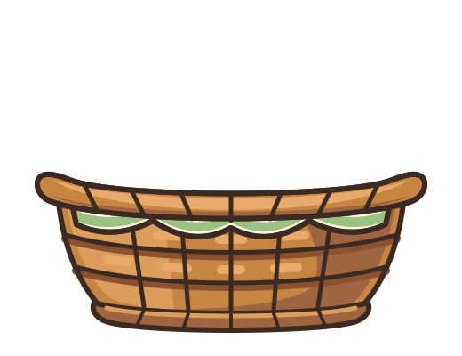

Single-sprite fallback (flower-basket) and 3-layer composite (flower-basket-back + preview flower + flower-basket-front)
flower-basket.svg)flower-basket-back.svg (z=1) → inline placeholder flower (z=2) → flower-basket-front.svg (z=3)